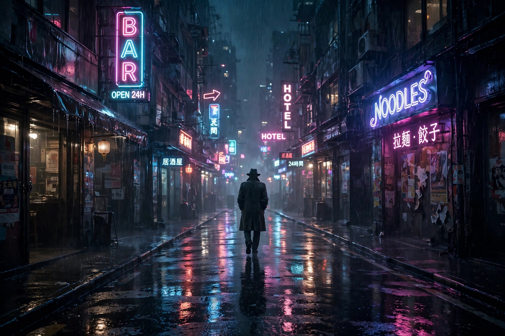

Neo-noir
Neo-noir is a revival of the film noir genre that emerged from the late 1960s and 1970s onward, updating the themes, visual style and moral world of classic noir — films such as Double Indemnity (1944) and Touch of Evil (1958) — for contemporary settings, colour cinematography and post-Production Code freedoms. Neo-noir retains noir's fatalism, alienated protagonists, femmes fatales, labyrinthine plots and corrupt institutions, while exploring them with greater explicitness and self-consciousness.

| Neo-noir | |
|---|---|
| Years active | Late 1960s – present |
| Preceded by | Film noir (c. 1940–1959) |
| Landmark films | Chinatown (1974), Taxi Driver (1976), Blade Runner (1982), L.A. Confidential (1997), Drive (2011) |
| Themes | Fatalism, corruption, alienation, moral ambiguity |
Characteristics
Where classic noir was shot in black and white under studio constraints, neo-noir uses colour expressively — neon, sodium streetlight, desert glare — while keeping low-key lighting and unbalanced compositions. Its detectives and criminals inhabit worlds shaped by Vietnam, Watergate, corporate power and urban decay rather than wartime anxiety. Neo-noir often revises the genre's gender politics, complicating the femme fatale, and borrows from other genres: science fiction in Blade Runner (the flagship of "tech-noir"), erotic thriller in Body Heat (1981) and Basic Instinct (1992), and rural crime drama in the Coen brothers' Blood Simple (1984) and Fargo (1996).
History
Precursors in the 1960s, such as Point Blank (1967), gave way in the 1970s to a self-conscious revival: Roman Polanski's Chinatown (1974), written by Robert Towne, set its conspiracy in 1930s Los Angeles and ended in complete moral defeat, while Martin Scorsese's Taxi Driver (1976) relocated noir psychosis to contemporary New York. The 1990s brought a commercial flowering with The Usual Suspects (1995), Se7en (1995) and Curtis Hanson's L.A. Confidential (1997). In the twenty-first century, works from Memento (2000) and Collateral (2004) to Drive (2011) and television series such as True Detective have kept the mode current; neo-noir traditions also flourish in Korean, Japanese and European cinema.
See also
Recreated from memory as part of the muse-webcrawl project.